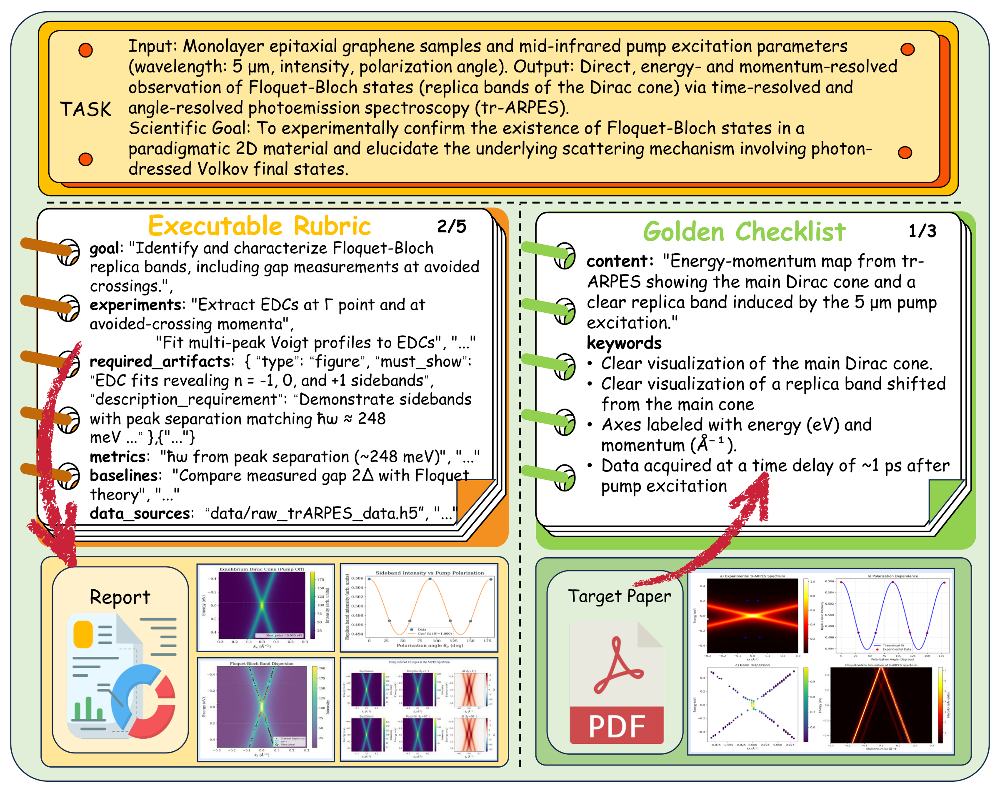
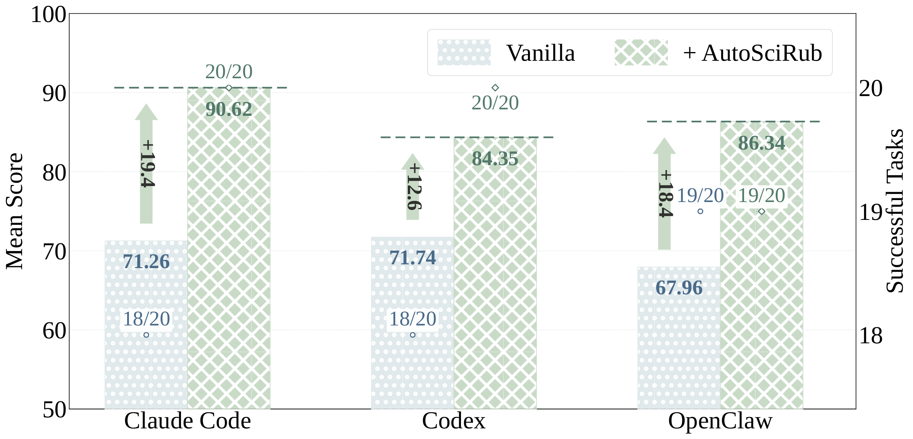
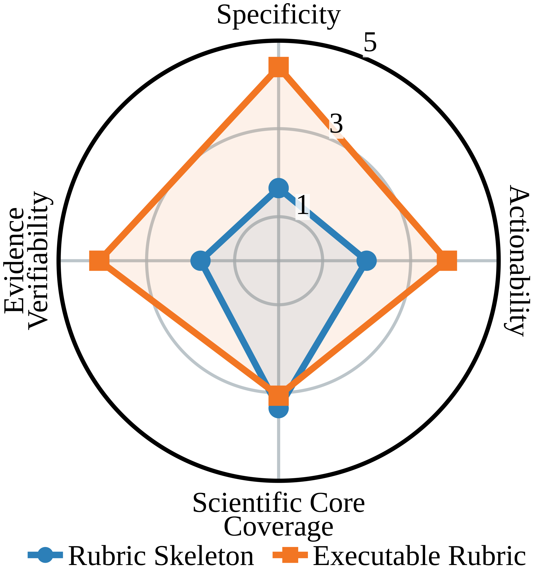
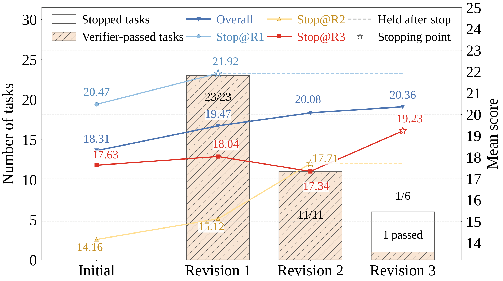

给 AI 一个研究目标，它可能写出看似完整的报告，却漏掉关键对照、采用不合适的方法，或者没有生成足以支持结论的数据。困难往往在执行之前就已出现：任务究竟需要什么证据，尚未被明确表达。AutoSciRub 尝试先生成一套具体的科研要求，再据此开展实验、检查产物和定向修订。
本文解读 Xuehai Wang 等人的 Learning to Evaluate Before Improving: Automatic Rubric Induction for Automatic Research Agents，依据 arXiv v1，提交于 2026 年 8 月 31 日，作者标注为 Work in progress。下面区分方法设计、作者报告的实验，以及我们的理解与建议。
一、课题解读：怎样把研究目标转成证据要求
假设研究任务是分析一份观测数据，解释某种现象在不同地区或条件下怎样变化。指令通常不会逐项写出应采用什么统计量、与谁比较、怎样处理单位，也不一定说明哪些结论需要额外证据。一个能熟练写代码的系统，仍可能把任务理解成邻近但不同的问题。
这一课题研究的是：怎样从不充分的研究指令中恢复科学目标，并将目标转成可以执行和检查的要求。 这里的 rubric 可以理解为一组评价与验收准则。它既能在最后判断完成情况，也能在过程中告诉系统应当生成哪些证据。
我们需要同时检查三个层次：研究问题是否抓准，实验计划是否可行，产物是否足以支持结论。详细计划能帮助执行，但详细本身不能保证方向正确；检查表全部满足，也取决于检查表是否覆盖了真正重要的问题。
二、相关文献解读：评价规则怎样进入研究流程
| 工作 | 主要探索 | 与本篇的连接 |
|---|---|---|
| PaperBench | 将论文复现要求拆成层级 rubric，检查实现、执行与结果 | 展示细粒度要求的诊断价值，也提出专家制定规则的规模问题 |
| ResearchClawBench | 提供指令、相关文献与原始数据，隐藏目标论文，用多模态规则评价再发现 | 提供一个执行时看不到官方评分要求的科研环境 |
| AstaBench | 组合科研任务、工具与产物评价，并区分部分进展与完整完成 | 提供另一类端到端研究任务，用于检查方法能否迁移 |
| Self-Refine | 由模型对初稿提出反馈，再迭代修改 | 引出关键对照：明确准则是否比一般性的自我改进更有效？ |
AutoSciRub 将 rubric 放在研究执行之前自动生成，并在执行后逐项检查、反馈修订。按文中流程，它是一层推理时的任务解释和执行控制机制；主要实验没有通过更新基础模型参数来实现这些改进。论文中的一般自我修订对照借鉴相关思路，也不能视为对所有既有反馈系统的全面比较。
三、研究问题解读：先评价，再改进，需要解决什么
为便于阅读，我们将论文目标整理成三个问题；这是本文的归纳。
- 怎样从宽泛指令得到可执行、可验证的科研要求？ 既要保持目标可追溯，又要结合文献惯例与实际可用数据。
- 这些要求能否改善完整系统的研究产物？ 需要在不同模型、不同智能体框架和另一任务集合上做成对比较。
- 改善来自哪里，又在哪些地方失效？ 需要区分目标分解、依据补充和定向修订，也要检查计划具体化是否真的提高了科学核心覆盖。
一个重要前提是：自动生成的 rubric 与基准的隐藏评分规则不同。 前者是系统根据可见材料构造的研究规范，后者用于评价最终产物。方法的目标是让前者更接近科学任务的真实要求，而不是让智能体直接读取官方答案或评分清单。
四、方法解读：从目标骨架到定向修订
第一步：只根据指令提炼目标骨架
系统先把研究指令拆成少量原子目标，每项有编号、名称和具体要求。此时只读取指令，不提前引入特定方法、指标、基线或预期结果，以减少目标分解被某种现成做法牵引。
输出是一份目标骨架，回答任务应当研究什么。它还不是完整实验方案；具体怎样建立证据，要留给后续步骤。
第二步：分别检查文献依据与数据可行性
文献阶段围绕各目标查询概念、方法、指标和协议，优先读取任务给出的相关材料，再补充检索，保留五到七篇核心论文。结果按目标整理，记录可采用的分析、对照、消融、稳健性检查与证据形式。
为减少直接找到隐藏目标论文的风险，查询避免使用长段原始指令、任务编号和特定文件名；检索层还在全文访问前，按评测框架维护的隐藏标题名单过滤候选论文。这是控制措施，不能独立证明所有潜在泄漏都被排除。引用文献用于指导设计，不充当本次任务已经完成的实验证据。
数据阶段则轻量检查文件、格式、维度、字段、单位、标签、条件和跨数据源关系，判断哪些分析确实可做。它用于制定计划，完整实验留到执行阶段，避免为不存在的标签或参考值设计无法验证的要求。这两步见第 3.2 节。
第三步：把目标、文献与数据合成具体准则
每项准则对应一个或多个目标，指定数据来源、实验或分析、评价指标与对照、应生成的文件及满足条件。这里的“可执行”主要指要求足够具体，能够指导智能体开展研究；它不意味着每项准则都已被编译成确定性的程序测试。
例如，附录 B 的原文格式示例将“分析各州播云项目的空间集中情况”进一步落实为按州计数、计算占比和基尼系数、生成地图、热图与排名表，并写明输入字段和输出路径。这是论文给出的 rubric 示例，不是我们重新运行后得到的研究结论。

第四步：执行研究，检查缺口，再修改产物
智能体读取生成的 rubric，完成首轮研究，交付报告、代码、结果、图表等。核验阶段逐项检查缺少的实验、结果、解释或证据，生成具体问题和修复要求；修订可以修改代码、重跑实验、补充分析、更新图表，也可以删除证据不足的结论。
方法主体将停止描述为要求满足或预算用尽。附录 A.3 给出了更具体的实现：在 OpenClaw 修订实验中，同一个智能体调用核验 skill，没有另外实例化独立核验模型；最多三轮修订、四次核验。
停止依赖顶层 overall_pass。它是 LLM 的综合判断，不是所有布尔准则的机械合取：高优先级要求可以满足，也可以由生成的证据给出科学上的解释；低优先级条目不要求逐项通过。运行器直接读取这个字段。因此，“通过内部核验”应理解为这一套判断机制下的通过，不能等同于隐藏官方评分满分。实现细节见附录 A.3。
五、实验设计与结果：先看整体收益，再拆解原因
主实验一：不同模型和框架是否都受益
ResearchClawBench 的主实验使用全部 40 个任务、10 个领域，每领域 4 题。每对配置使用相同基础模型、智能体框架、任务输入和可用环境，比较原版与增加 AutoSciRub 后的结果。官方隐藏目标论文及评分规则不向执行智能体开放，最终由 GPT-5.1 按基准规则评价。
分数范围为 0—100，每题的文本和图像要求对应隐藏论文中的科学产物，再对 40 题取平均。论文说明该协议约以 50 分标定目标论文级再发现；这是一种基准标定，不是通用的科研能力及格线。
| 固定条件 | 配置 | 原版 | +AutoSciRub | 绝对增益 |
|---|---|---|---|---|
| Codex 框架 | GPT-5.4 | 18.66 | 21.04 | +2.38 |
| Codex 框架 | GLM-5.2 | 20.86 | 22.73 | +1.87 |
| Codex 框架 | MiniMax-M3 | 19.05 | 21.04 | +1.99 |
| DeepSeek-V4-Flash 模型 | Claude Code | 16.60 | 18.74 | +2.14 |
| DeepSeek-V4-Flash 模型 | OpenClaw | 17.25 | 20.36 | +3.11 |
| DeepSeek-V4-Flash 模型 | OpenScience | 14.49 | 18.09 | +3.60 |
来源：Table 1。增益单位是评分点，不是相对增长百分比。三个模型平均增加 2.08 分，三个框架平均增加 2.95 分。
六个配置的总体均值都提高，支持方法能在这些不同系统上发挥作用。但并非每个领域都提高：作者报告 60 个“配置 × 领域”对比中 49 个改善；这 60 个对比不是 60 道独立任务。最高总体分仍为 22.73，也说明稳定提升与完成高水平再发现之间仍有距离。
这里的三次重复是评分，不是研究执行。 每个任务与配置只运行一次，产生一份报告及产物，再由裁判独立评分三次并取平均。它减少的是裁判打分波动，没有测量三次独立研究运行的稳定性。成对配置也没有匹配总计算量：AutoSciRub 增加了生成准则、核验和修订调用，跨框架未设统一 token、工具调用、运行时长或费用上限。协议见附录 A.1。
主实验二：迁移到 AstaBench 后改善什么
作者从 AstaBench 的 Easy 版本 40 道测试题中，用固定随机种子抽取 20 题，所有配置使用同一子集和执行顺序。最终沿用任务 rubric 与三类产物的评分流程，但使用 MiniMax-M3 作为裁判。

| 框架与基础模型 | 原版得分 | 加入后得分 | 绝对增益 | 可评分提交数量：原版 → 加入后 |
|---|---|---|---|---|
| Claude Code / DeepSeek-V4-Flash | 71.26 | 90.62 | +19.36 | 18/20 → 20/20 |
| Codex / GPT-5.4-mini | 71.74 | 84.35 | +12.61 | 18/20 → 20/20 |
| OpenClaw / DeepSeek-V4-Flash | 67.96 | 86.34 | +18.38 | 19/20 → 19/20 |
来源：Figure 3 与附录 A.1，三个配置平均增加 16.78 分。
本篇的“成功任务”定义为运行没有执行级失败，并产生官方评价器可以处理的有效提交。 它与 AstaBench 中“所有必要科研要求都满足”的全项通过率不同，不能将 20/20 写成完全完成二十项研究。
这组结果支持在该固定子集上改善产物评分，并维持或提高提交完成数量。它不是 AstaBench 全套或 Hard 版本的成绩；子集、模型和裁判均有具体设置，也不宜与其他论文的原始排行榜分数直接横比。
消融：目标骨架、依据补充和修订各有什么作用
累积消融固定 OpenClaw 与 DeepSeek-V4-Flash，仍在全部 40 个 ResearchClawBench 任务上比较。
| 设置 | 总分 | 相对原版 | 相对前一阶段 |
|---|---|---|---|
| 原版 | 17.25 | — | — |
| 加入目标骨架 | 17.61 | +0.36 | +0.36 |
| 再加入有依据的具体 rubric | 18.31 | +1.06 | +0.70 |
| 再加入定向修订，完整方法 | 20.36 | +3.11 | +2.05 |
来源：Table 2。第二个新增阶段共同包含文献依据、数据探索和准则合成，并未单独隔离三者贡献。
结果说明，列出目标有所帮助，进一步具体化和执行后的定向修改带来了更多收益。但这是按顺序增加模块的对照，增量依赖已有组件与新增计算，不能直接当成每个模块在所有设置下的独立贡献。
准则质量：更具体，未必更接近科学核心
作者让 MiniMax-M3 依据任务、可见数据和官方清单，分别评价目标骨架与具体 rubric 的四个维度，每项为 1—5 分。官方清单只给裁判，执行智能体不能看到。
| 质量维度 | 目标骨架 | 具体 rubric |
|---|---|---|
| 具体性 | 1.65 | 4.40 |
| 可操作性 | 2.00 | 3.83 |
| 证据可验证性 | 1.78 | 4.08 |
| 科学核心覆盖 | 3.35 | 3.07 |

四项平均从 2.20 提高到 3.84，但核心覆盖由 3.35 降到 3.07。我们的理解是：方法较擅长将已经选定的方向具体化，却未证明能持续纠正最初的科学问题理解。若骨架遗漏了核心目标，更多方法细节也可能继续丰富偏离目标的分析。
Figure 4b 中核心覆盖与报告成绩正相关，这是一种关联，不能单独解释为因果效应。补充实验也没有提供独立专家对这些自动 rubric 的全面核验。分析见第 4.4 节与附录 A.2。
修订对照：明确反馈是否比一般自我改进更好
两种修订都从平均分 18.31 的同一批初始报告和图片出发，使用相同的 OpenClaw 与 DeepSeek-V4-Flash。
| 修订轮次 | 一般自我修订得分 | rubric 定向修订得分 |
|---|---|---|
| 1 | 18.80 | 19.47 |
| 2 | 18.52 | 20.08 |
| 3 | 19.08 | 20.36 |
来源：Table 3。三轮累计增益分别为 0.77 与 2.05 分；不是最终得分相差 2.7 倍。
定向修订的汇总分数持续上升，一般修订第二轮出现回落。不过，附录明确说明两组并非相同完整工作目录或相同计算预算：定向组保留原代码和输出，并将核验与修改拆成调用；一般组只复制冻结报告和图片，在新工作目录中重新获得任务材料，每轮合并审查与修改。
因此，这个对照支持明确反馈在所测流程中的价值，但没有单独隔离“反馈内容本身”的因果贡献。已有代码状态、调用组织和停止机制也可能影响结果。

定向组第一轮处理 40 题，此后只有 17 题和 6 题继续修改，三轮内共有 35 题得到内部核验通过。图中的后续均值保留已停止任务的旧分数，未为它们额外生成或重评报告。这里的 35/40 是内部综合判断下的停止统计，不是官方基准全项成功率；没有完整成本测量，也不能仅凭早轮增益较大就确定最佳性价比轮数。
六、我们自己的思考
课题思考：这个领域在研究什么
我们认为，这篇论文把一个重要问题显式化了：科研自动化不仅需要执行计划，还需要判断什么证据值得产生、哪些结论可以成立。将目标、数据、方法和产物对应起来，可以让反馈更具体，也让失败更容易定位。
更深一层的问题是规范本身是否正确。规范应当帮助系统发现遗漏、接受反证和修正研究方向，而不只是推动它满足最初生成的一份清单。具体性与科学核心覆盖的分离，正是值得继续研究的切入点。
局限问题思考：目前还存在哪些问题
- 目标解释可能被过早固定。 核心覆盖未随具体化提高，附录示例还包含预期结论字段；若预期被当成必须证明的结果，可能强化确认偏差。这是我们根据方法提出的风险，不是已测量到的普遍违规。
- 核验缺少足够独立性。 同一智能体在任务会话中核验自己的产物，停止又依赖综合判断；自动裁判高分或内部通过，仍需与独立证据验证区分。
- 收益与资源投入尚未分开。 没有预算匹配，研究执行每配置每题仅一次；修订对照的工作状态不同，也没有充分衡量运行随机性与成本。
- 迁移与成功定义仍有边界。 AstaBench 只取 Easy 的固定二十题，可评分提交数量不是全项科研成功；不同评分器下的提升也需要进一步验证其对应的实际科学价值。
解决方案思考：这些问题有哪些解决方向
以下是我们的后续实验建议，不是作者已经完成的结果。
- 对应目标固定： 先由独立评审检查目标覆盖，允许依据数据修订或否定预期；将“预期发现”与“必须提供的检验”分开，加入会推翻初始假设的任务检查确认偏差。
- 对应核验独立性： 将关键准则接到确定性的数值、文件和执行检查，增加独立模型与专家抽查，分别记录不适用、证据不足与失败，公开误判案例及顶层通过决策的依据。
- 对应资源与稳定性： 在相同冻结代码、输出和报告状态上比较反馈策略，匹配调用、时间与费用，运行多个随机种子，报告收益分布和单位成本的有效改进。
- 对应迁移边界： 扩展到完整 Easy、Hard 和更多科学任务，分别报告运行完成、证据充分和全项通过；保留独立未参与构造的评分器，并让领域专家核对新增的实验是否真正补足了科学论证。
版本与素材：依据 AutoSciRub v1 PDF 与其作者源文件；官方代码。Figures 2、3、4a、5、6a 归 Xuehai Wang 等作者所有，依 CC BY-NC-SA 4.0 署名用于本非商业阅读文章，原图仅渲染为网页图片，未改绘。表格按原结果整理，解释、局限与建议为本文分析。